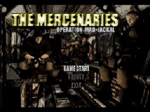
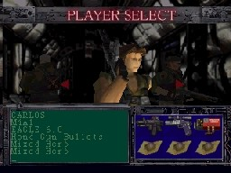
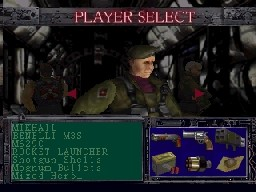
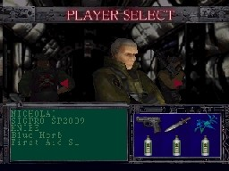
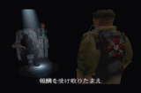

|
惡靈古堡３-----傭兵模式
|
|
 These soldiers have lost their edge . They have forgotten what fear and survival mean. It's time for them to remember...
出現條件：用任一模式破關一次後存檔，讀取存檔選擇 The mercenaries 模式，電腦版則在遊戲開始選 單中即可選取。 遊戲的目的是取得金錢、購買武器，購買的武器可以在正式遊戲中使用。
人物選擇  Carlos Oliveira 裝備： M4A1 衝鋒步槍+子彈 100 %，EAGLE 6.0+子彈 15 發 ，手槍子彈 90 發，混合藥草綠藍紅3份。
 Mikhail Victor 裝備： M3S 散彈槍+子彈 7 發，散彈 21 發， M629C 軍用左輪手槍+子彈 6 發，軍用手槍子彈 18 發， M66 火箭砲+子彈 8 發，混合藥草綠藍紅。
 Nicholai Ginovaef 裝備：野戰刀， SP2009傭兵手槍+子彈 15 發，綠色藥草一株，急救噴霧3瓶。
|
|
生存者救援 生存者在傭兵模式中共有６人，救援時必須把他所在空間的敵人全滅才能救援成功，如果所剩時間過 短，生存者會死亡。玩家救得的每一位生存者都會留下道具在原地（依玩家選擇的角色不同，獎勵道 具也會不同），時間也會增加 20 秒。
隱藏地點位置 傭兵模式中共有６處隱藏地點，找到的獎賞是增加秒數，找到一處加２秒，兩處４秒，三處８秒，四 處１６秒，五處３２秒，六處６４秒，總共可加１２６秒。 １. 報社前通道底端小門內 ２. 餐廳最內側桌子 ３. 變電所小房間內的儀器面板 ４. 商店街通道可取得消防栓處 ５. 警官全滅通路底端的警察屍體 ６. 可取得打火機油的小房間，有散彈槍的屍體
基本介紹 初始畫面進入遊戲首先要選擇人物， Nicholai 的難度算是最高的， Mikhail 則算是最簡單，遊戲中靠射 殺敵人得到秒數，若是連射會有更高的秒數， Mikhail 裝備的散彈槍比較容易達成，還有其中會碰上追 跡者，每一隻都要打倒兩次，如果時間夠多（到車廠外還剩兩分鐘），也會碰上追跡者的第二型態， 這也是有火箭砲的 Mikhail 比較容易打倒。遊戲中佔重要地位的油桶一定要善加利用，可以迅速累積秒 數，所得金錢可以購買衝鋒步槍、旋轉機槍、火箭砲、無限彈（詳請見武器介紹），可以在正式遊戲 中使用（存放於道具箱中）。 
增加秒數 遊戲採用擊倒敵人增加秒數的系統，每一種所擊倒的敵人增加的秒數也不同，除了吸血水蛭、小蜘蛛 、幼蟲之外，其他的累積秒數如下：
除了打倒敵人，緊急迴避也可以增加秒數，連續迴避亦不失為一種好方法。另外生存者一人擁有20秒 的時間也別忽略了。 還有一點，遊戲中追跡者的攻擊不只對玩家，對其他敵人也有效用，而且由追跡者解決的敵人所增加 的時間與分數都加在玩家身上。
等級評價 遊戲結束後出現的成績統計共分三個項目，使用時間、等級、所得金錢，其中的等級是依照殺敵多寡 來評定的，分數如下：
緊急迴避也可以增加分數。
武器影響 因為遊戲的三個人使用的武器都不相同，為了評定的公正性，而有下列的改變 （只打倒敵人的最後一 擊所使用的武器）： １. 增加秒數──野戰刀為手槍攻擊的８倍，使用汽油桶爆破攻擊為手槍攻擊的２倍 ２. 分數──野戰刀為手槍攻擊的２倍，使用汽油桶為手槍攻擊的２倍，火箭砲為手槍攻擊的 1/3 倍
簡易攻略 遊戲一開始由火車上出發，目的地是正式遊戲的起點──倉庫的管理室。途中不只一條路可以選擇， 以下的介紹是針對可以救得所有生存者的路線。（地圖請參照惡靈３ 地圖攻略） 從火車出發，路經火車站前通路時要小心轉彎處地上的殭屍是活的，下一條路上則是出現一堆烏鴉， 快速跑過即可。一進入Y字通路要小心迎面的第一隻僵屍，要迅速解決而不能打到他身後的汽油桶， 然後前進瞄準汽油桶，待殭屍群聚集再引爆。 從加油站救出生存者後回Y字通路到廣場，到報社的路上有一大群殭屍，如果有散彈槍這裡倒是一個 很好賺時間的地方，報社一樓的獵人ß要迅速解決，上二樓時小心第二隻出現，解救三樓生存者。 商店街有三隻殭屍犬，餐廳有三隻獵人ß，救出下水道的生存者，餐廳外車道上有一汽油桶可使 用。 在通路碰上追跡者，搭電梯往變電所，變電所前有三隻大蜘蛛，前庭有兩隻吸血腦怪，在變電所中救 出生存者。 回到主線來到停車場的管理室，地上的殭屍群大多都活著，出管理室繞過兩隻殭屍，在出口前引爆汽 油桶，到廢棄巴士廣場。時間足夠時遇上追跡者第二型態，附近有三個汽油桶可用。 在消防巷這裡正是可以利用追跡者擊敗殭屍的地方，不過要小心巷道窄小而躲不掉。 小巷快速通過即可避開三隻陰溝惡魔，前往藥品工廠前的岔路要等待時機再引爆汽油桶，直線通路上 的吸血水蛭快速跑過即可，擊敗兩隻吸血腦怪後進入藥品工廠，到藥品存放室解救生存者，要小心解 決兩隻獵人r。 回主線繼續前進，閃避三隻殭屍犬，在接下來的岔路上有三條路，如果往左是最安全但無法解救生存 者，另外兩條則是決定要由哪一個門進入傑克酒吧，這條路上有兩隻追跡者。 將酒吧的殭屍全數擊垮後解救生存者，往終點前進。倉庫前有三隻獵人ß，進入倉庫擊倒擋路的敵人 奔向終點吧！ |
||||||||||||||||||||||||||||||||||||||||||||||||||||||||||||||||||||||||||||||||||||||||||||||||||||||||||||||||||||||||||||||||||||||||||
惡靈深淵Biohazard Abyss http://98.to/coolbio